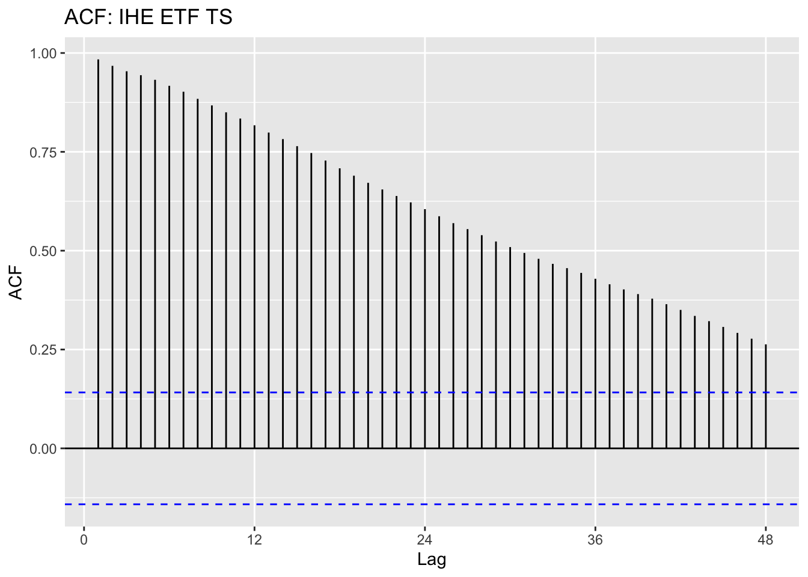
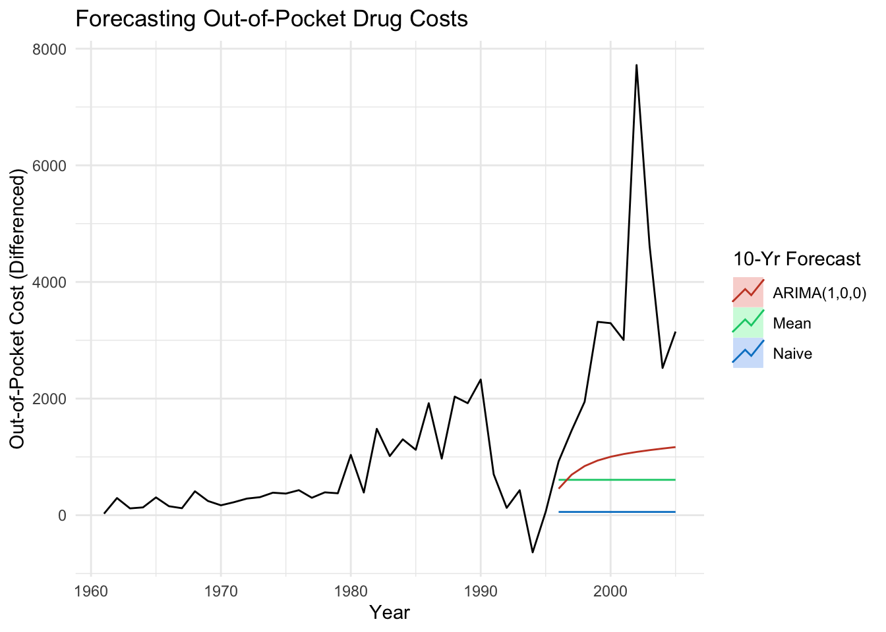

ggAcf(drug.ts, 48, main = "ACF: Prescription Drug Cost TS")
ggPacf(drug.ts, 48, main = "PACF: Prescription Drug Cost TS")
To review, we learned in the EDA tab that the prescription drug cost data is non-stationary based on the results of the ACF plot and the Augmented Dickey-Fuller test, seen below.
ggAcf(drug.ts, 48, main = "ACF: Prescription Drug Cost TS")
ggPacf(drug.ts, 48, main = "PACF: Prescription Drug Cost TS")
tseries::adf.test(drug.ts)
Augmented Dickey-Fuller Test
data: drug.ts
Dickey-Fuller = -2.5484, Lag order = 3, p-value = 0.353
alternative hypothesis: stationaryAdditionally, we also learned that the U.S. Pharmaceutical ETF closing prices dataset was non-stationary, as seen below.
ggAcf(pharma.ts, 48, main = "ACF: IHE ETF TS")
ggPacf(pharma.ts, 48, main = "PACF: IHE ETF TS")
tseries::adf.test(pharma.ts)
Augmented Dickey-Fuller Test
data: pharma.ts
Dickey-Fuller = -2.1149, Lag order = 5, p-value = 0.528
alternative hypothesis: stationaryAs seen in the last section, we can confirm that both datasets in this study are non-stationary. So, before moving on to ARIMA modeling, it is necessary to transform the dataset so that it is at least weakly stationary.
require(gridExtra)Loading required package: gridExtra
Attaching package: 'gridExtra'The following object is masked from 'package:dplyr':
combinedrug.fit = lm(drug.ts~time(drug.ts), na.action = NULL)
plot1<-autoplot(resid(drug.fit), main="Drug Cost: Detrended")
plot2<-autoplot(diff(drug.ts), main="Drug Cost: First Difference")
grid.arrange(plot1, plot2,nrow=2)
Next, we can look at the ACF plots to compare the detrended dataset and the differenced dataset. Both detrending and first-order differencing are pretty successful in making the data more stationary. Because the differencing is a bit more successful at making the dataset stationary, I will proceed with that first-order differenced dataset for modeling.
require(gridExtra)
# plot1 = ggAcf(drug.ts, 48, main="Original Data: Drug Cost")
plot2 = ggAcf(resid(drug.fit), 48, main="Detrended Data: Drug Cost")Warning: Ignoring unknown parameters: mainplot3 = ggAcf(diff(drug.ts), 48, main="First Differenced Data: Drug Cost")Warning: Ignoring unknown parameters: maingrid.arrange(plot2, plot3,nrow=2)
drug.diff = diff(drug.ts)To determine the p,d, and q parameters for ARIMA, we need to take another look at the ACF and PACF plots.
Because the data was differenced one time, we can say that d will be equal to 1.
There are 3 significant lag terms in the ACF, meaning that the initial q value will be equal to 3. There is 1 significant lag term in the PACF, so the initial p value will be equal to three.
ggAcf(drug.diff, 48, main="ACF: Differenced Data")ggPacf(drug.diff, 48, main="PACF: Differenced Data")
We can now proceed with the ARIMA(1,1,3) model.
As seen below, the p-values in the Ljung-Box statistic are very small in most cases, suggesting that the values might be showing some dependence on each other.
The AIC and BIC are 17.6 and 17.8, respectively.
Additionally, we can see that the only the AR(1) and MA(1) coefficients have small enough values to be significant in the model. This means that MA(2) and MA(3) are insignificant, and that removing the second and third MA parameters from the model may improve its performance.
set.seed(73)
drug.arima113 = capture.output(sarima(drug.diff, 1,1,3))
cat(drug.arima113[142:168], drug.arima113[length(drug.arima113)], sep = "\n")
Coefficients:
ar1 ma1 ma2 ma3 constant
0.7113 -0.8990 -0.2796 0.1785 -7.3396
s.e. 0.1828 0.2181 0.2209 0.1857 30.2138
sigma^2 estimated as 1963201: log likelihood = -512.47, aic = 1036.94
$degrees_of_freedom
[1] 54
$ttable
Estimate SE t.value p.value
ar1 0.7113 0.1828 3.8907 0.0003
ma1 -0.8990 0.2181 -4.1218 0.0001
ma2 -0.2796 0.2209 -1.2657 0.2110
ma3 0.1785 0.1857 0.9615 0.3406
constant -7.3396 30.2138 -0.2429 0.8090
$AIC
[1] 17.57523
$AICc
[1] 17.59442
$BIC
[1] 17.78651Because MA2 and MA3 are insignificant in the model above, I am going to test ARIMA(1,1,1) to see if this improves model performance and reduces error.
Overall, this model seems to perform a bit better than ARIMA(1,1,3). The p-values for Ljung-Box are larger across the board, and the AIC and BIC error have decreased slightly to 17.5 and 17.7, respectively. Additionally, we can see that all coefficients in the model are significant.
set.seed(73)
drug.arima111 = capture.output(sarima(drug.diff, 1,1,1))
cat(drug.arima111[72:96], drug.arima111[length(drug.arima111)], sep = "\n")
Coefficients:
ar1 ma1 constant
0.689 -0.9998 -7.2324
s.e. 0.102 0.0547 30.7778
sigma^2 estimated as 2024579: log likelihood = -513.31, aic = 1034.63
$degrees_of_freedom
[1] 56
$ttable
Estimate SE t.value p.value
ar1 0.6890 0.1020 6.7567 0.0000
ma1 -0.9998 0.0547 -18.2728 0.0000
constant -7.2324 30.7778 -0.2350 0.8151
$AIC
[1] 17.53608
$AICc
[1] 17.54348
$BIC
[1] 17.67693As a result, I will be proceeding with ARIMA(1,1,1) as my manually-selected ARIMA model for this dataset.
In R, auto.arima() is a function that automatically selects ARIMA parameters when fed a set of time-series data.
Using the function with the differenced out-of-pocket prescription drug cost dataset, we get:
auto.arima(drug.diff)Series: drug.diff
ARIMA(1,0,0) with zero mean
Coefficients:
ar1
0.7006
s.e. 0.0900
sigma^2 = 2063958: log likelihood = -521.17
AIC=1046.35 AICc=1046.56 BIC=1050.54The auto.arima() function suggests that an ARIMA(1,0,0), or AR(1), model is this best for the differenced time series dataset.
Although I was initially suspicious of how this would perform, this model does in fact appear to be a slightly better fit than my previous models. Not only is the coefficient significant, but the Ljung-Box p-values are all significantly different from zero. Additionally, the AIC and BIC have decreased further to 17.4 and 17.5, respectively.
drug.arima100 = capture.output(sarima(drug.diff, 1,0,0))cat(drug.arima100[28:50], drug.arima100[length(drug.arima100)], sep = "\n")Coefficients:
ar1 xmean
0.660 625.6818
s.e. 0.097 521.0468
sigma^2 estimated as 1991712: log likelihood = -520.56, aic = 1047.11
$degrees_of_freedom
[1] 58
$ttable
Estimate SE t.value p.value
ar1 0.6600 0.0970 6.8022 0.0000
xmean 625.6818 521.0468 1.2008 0.2347
$AIC
[1] 17.45191
$AICc
[1] 17.45542
$BIC
[1] 17.55663As seen above, the auto.arima() selection is different than my manually chosen model of ARIMA(1,1,1). I am not exactly sure why this is the case, but it may have something to do with the auto.arima() function prioritizing a lower number of parameters when there is little performance improvement from adding additional parameters.
Next, I want to forecast the next ten years of out-of-pocket drug costs for both my manually-selected ARIMA(1,1,1) model and the auto.arima() selected ARIMA(1,0,0) model.
As can be seen below, there is practically no difference between the two selected models when it comes to forecasting.
drug.diff %>% Arima(order = c(1,1,1), include.drift = TRUE) %>%
forecast %>%
autoplot()+
ylab("Out-of-pocket Drug Cost Predictions")+theme_minimal()drug.diff %>% Arima(order = c(1,0,0), include.drift = TRUE) %>%
forecast %>%
autoplot()+
ylab("Out-of-pocket Drug Cost Predictions")+theme_minimal()
Finally, I am going to compare my chosen ARIMA model to some simple benchmark models to prove its comparative forecasting power. To do this, I will test the three methods: mean forecasting, naive forecasting, and my ARIMA(1,0,0) and see their ability to predict the ten-year interval from 1995 to 2005.
As a reminder, here is the time series plot for the first-order differenced data.
autoplot(drug.diff)+ggtitle("Out-of-Pocket Drug Costs (1960-2020) (1st-order differenced)")+xlab("Year")+ylab("Out-of-Pocket Cost (Differenced)")Selecting only the the window of interesting, the plot looks like:
drug.diff2 = window(drug.diff, start=1960, end=1995)Warning in window.default(x, ...): 'start' value not changedautoplot(drug.diff2)+ggtitle("Out-of-Pocket Drug Costs (1960-1995) (1st-order differenced)")+xlab("Year")+ylab("Out-of-Pocket Cost (Differenced)")
Mean
drug.mean = meanf(drug.diff2, h=10)
checkresiduals(drug.mean)
Ljung-Box test
data: Residuals from Mean
Q* = 37.841, df = 6, p-value = 1.207e-06
Model df: 1. Total lags used: 7Naive Method
drug.naive = naive(drug.diff2, h=10)
checkresiduals(drug.naive)
Ljung-Box test
data: Residuals from Naive method
Q* = 19.811, df = 7, p-value = 0.005992
Model df: 0. Total lags used: 7Now, I will plot all forecasts together:
autoplot(drug.diff2) +
autolayer(meanf(drug.diff2, h=10), series = "Mean", PI=FALSE)+
autolayer(naive(drug.diff2, h=10), series = "Naive", PI=FALSE)+
drug.diff2 %>% Arima(order = c(1,0,0), include.drift = TRUE) %>%
forecast %>%
autolayer(series = "ARIMA(1,0,0)", PI=FALSE)+
ggtitle("10-Year Forecast (1995-2005) for Out-of-Pocket Drug Costs")+xlab("Year")+ylab("Out-of-Pocket Cost (Differenced)")+guides(colour=guide_legend(title = "10-Yr Forecast"))When compared to the original data, it is clear that the ARIMA model does a better job of forecasting that the mean and naive methods. That being said, none of the models are able to forecast the incredibly steep spike in out-of-pocket prescription drug costs beginning in 1994.
drug.diff3=window(drug.diff, start=1960, end=2005)Warning in window.default(x, ...): 'start' value not changedautoplot(drug.diff3) +
autolayer(meanf(drug.diff2, h=10), series = "Mean", PI=FALSE)+
autolayer(naive(drug.diff2, h=10), series = "Naive", PI=FALSE)+
drug.diff2 %>% Arima(order = c(1,0,0), include.drift = TRUE) %>%
forecast %>%
autolayer(series = "ARIMA(1,0,0)", PI=FALSE)+
ggtitle("Forecasting Out-of-Pocket Drug Costs")+xlab("Year")+ylab("Out-of-Pocket Cost (Differenced)")+guides(colour=guide_legend(title = "10-Yr Forecast"))